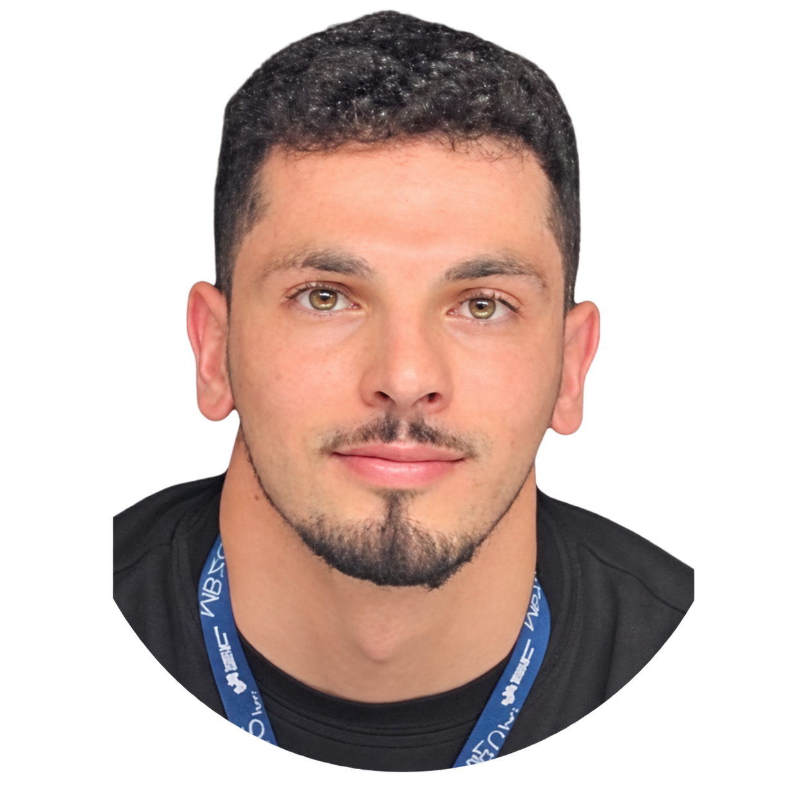
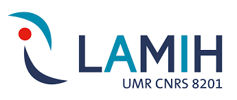
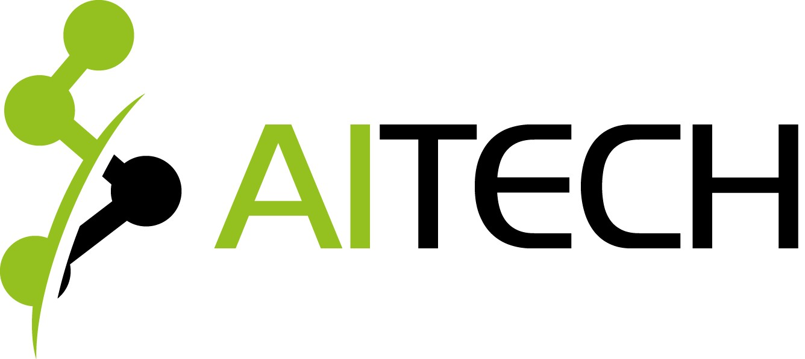
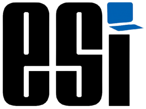

About me

I’m Lotfi Abdelkrim Mecharbat, a PhD student in Machine Learning at Mohamed bin Zayed University of Artificial Intelligence.
I work with Prof. Mohammad Yaqub and Prof. Martin Takáč. My research focuses on foundation models, compression, efficient deep learning, adaptation, knowledge distillation, and meta-learning. I also work on AutoML and neural architecture search.
Before my PhD, I worked on hardware-aware architecture search, railway anomaly detection, and deployment on edge devices.
I’m interested in methods that select a model’s architecture, initialization, and training settings for a given task.
I like football, trekking, and history. I captained MBZUAI’s university football team to a tournament win. I’ve also worked on player and ball tracking for amateur football videos.
University football ↗Education & experience
My education and research experience, from my current PhD back to my studies in Algiers.
- — Present
PhD in Machine Learning
MBZUAI
Researching automatic specialization of foundation models. Supervised by Prof. Mohammad Yaqub and Prof. Martin Takáč.
- — 2024
Research Assistant
NYU Abu Dhabi · CQTS
Explored mixture-of-experts architecture search and complex-valued physics-informed neural networks.
- — 2023
Research Engineer
ALSTOM & LAMIH
Worked on diffusion-based architecture search, railway anomaly detection, and edge deployment.
- — 2022

Research Assistant
LAMIH
Explored hybrid CNN–Transformer architectures and deployment on tiny edge devices.
- — 2021

Data Science Intern
AITECH
Applied routing and optimization methods to agricultural supply-chain logistics.
- — 2022

Engineering degree & M.Sc. in Computer Science
ESI Algiers
High Honors. Studied neural architecture search for efficient Vision Transformers on edge devices.
Training and deployment
I’ve built training pipelines on NVIDIA and AMD ROCm clusters. I’ve also used ONNX Runtime, TensorRT, and INT8 quantization for deployment on edge devices.
Python · C/C++ · PyTorch · Hugging Face
CUDA · Triton · Docker · Slurm
Arabic (native) · English (fluent)
French (TCF C1)
2nd place worldwide
AutoML 2022 Global Competition
Contact
You can email me about my research or a possible collaboration.